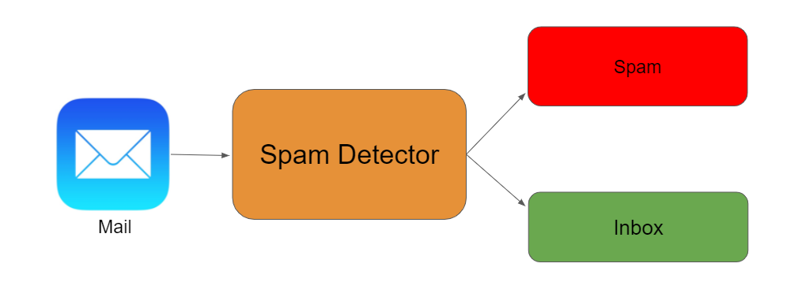

Spam Email Detector
Objective
Investigated five different supervised learning algorithms for detecting whether an email is spam or not.
Keywords
- Natural Language Processing
- Classification in Machine Learning
Results
Spam Email Detector is a Python application I developed while doing my independent study project through UT's Direct Reading Program. Spam Email Detector utilizes five different machine learning classifiers to identify whether an email is spam or not. The five machine learning classifiers are Gaussian Distribution, Random Forest, Support Vector Machine, Logistic Regression, and Multi-layer Perceptron (MLP). It was noticed that the Logistic Regression and Multi-layer Perceptron classifer performed the best for filtering emails for spam. Exmaple emails and corresponding prediction by each classifer is seen below.
As a final project, I did a presentation over Support Vector Machine at the Direct Reading Program presentation event. I had the opportunity to explain the mathematical groundwork seen within the classifier and demonstrate an example program in R utilizing Support Vector Machine. The link to the slide show is here